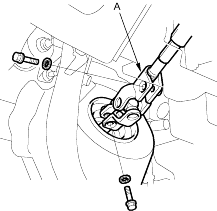
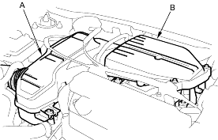
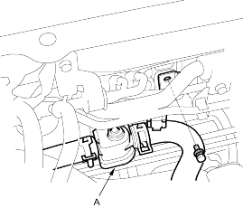

Ball joint remover, 28 mm, 07MAC-SL00200
Note these items during removal:
- Using solvent and a brush, wash any oil and dirt off the valve body unit its lines and the end of the gearbox. Blow dry with compressed air.
- Be sure to remove the steering wheel before disconnecting the steering joint. Damage to the cable reel can occur.
- LHD type is shown, RHD type is symmetrical.
- Raise the front of vehicle, and make sure it is securely supported.
- Remove the front wheels.
- Remove the driver's airbag and the steering wheel (see page 17-6).
- Remove the driver's dashboard lower covers.
- Remove the steering joint bolts, disconnect the steering joint by moving the steering joint (A) toward the column.

- Remove the air cleaner (A) and resonator (B).

- Open the heater valve cable clamp, and disconnect the heater valve cable. Remove the heater valve (A) from the bulkhead and move it aside.
